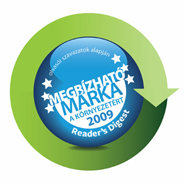

Malév Zrt. cégismertető
A Malév Zrt. több mint nyolcvanéves múltra tekint vissza, 2026. március 29-én ünnepelte fennállásának 80.
évfordulóját. Napjainkban a közép-kelet-európai térség egyik vezető, menetrendszerű utasszállítással,
árufuvarozással és charterüzemeléssel foglalkozó légitársaságaként tartják számon.

A Malév 33 országban képviselteti magát képviseletek és vezérügynökök útján. A légitársaság járatain
2010-ben több mint 3 millió fizető utas repült.
Szakmai elismerések
A Malév gépei a legcsendesebbek
A prágai repülőtér által szervezett felmérésből kiderült, hogy a Malév gépei a legcsendesebbek a
turbólégcsavaros kategóriában megelőzve neves német és osztrák légitársaságokat, melyek a második és
harmadik helyezést kapták. A Malév így ’The Quietest Airline 2010’ (A legcsendesebb légitársaság 2010)
díjat kapta a felmérést végző prágai légikikötő és a cseh főváros repülőtéri 6. kerületi vezetőitől. A
szervezők abból a célból hirdették meg a versenyt immáron negyedik alkalommal, hogy pozitív példával
ösztönözzék a légitársaságokat a környezetkímélő eljárások és technológiák alkalmazására.
Malév 2010-ben Kelet-Európa Legjobb Légitársasága
Légitársaságunkat Kelet-Európa legjobb légitársaságává választották egy, az utasok véleményén alapuló
független felmérés eredményeként.

A World Airline Awards-t 1999-ben alapították, mely az évenkénti Világ Légitársaságai Felmérés
eredményein alapul. A 2009/2010-es esztendőben a felmérésben az egész világból, több mint 200
légitársaság, a legnagyobb nemzetközi es belföldi légiszállítók vettek részt. A 2010-es hamburgi World
Airline Award díjátadón Martin Gauss vezérigazgató vette át a Skytrax, Kelet-Európa Legjobb
Légitársasága 2010 díjat.
A Malév győzelme kapcsán Mr. Edward Plaistes, a Skytrax elnöke elmondta:
"Fantasztikus teljesítmény
ez a Malévtól, hiszen teljes mértékben megfeleltek, sőt túlteljesítették utasaik elvárásait, amely a
Legjobb Kelet-Európai Légitársaság nevet hozta meg számukra. A döntés aláhúzza azt a tényt, hogy a Malév
sikerességét annak köszönheti, hogy a legnehezebb körülmények között is ki tudta vívni utasai
elégedettségét."
A legmegbízhatóbb „ZÖLD" légitársaság lett a Malév
A Reader's Digest magazin European Trusted Brands (ETB) felmérése szerint az olvasók véleménye alapján a
Malév a legmegbízhatóbb márka környezetvédelmi szempontból.

A Reader's Digest magazin European Trusted Brands (ETB) 2001-ben indította felmérését, mely a legnagyobb
és legátfogóbb fogyasztói tanulmányok egyike Európában. Idén a vizsgálat 16 európai országra terjedt ki
(Ausztria, Belgium, Csehország, Finnország, Franciaország, Hollandia, Lengyelország, Magyarország,
Nagy-Britannia, Németország, Oroszország, Portugália, Románia, Spanyolország, Svájc, Svédország) és
elsődleges célja az volt, hogy kiderítse, mely márkákban bíznak leginkább az európai fogyasztók.
A reprezentatív felmérés az idei évben első alkalommal vizsgálta meg, hogy az emberek mennyire tartják
megbízhatónak a különböző márkákat környezetvédelmi szempontból.
A kérdőívek kitöltőit arra kérték, hogy az adott termék/szolgáltatás kategóriák mindegyikénél nevezzenek
meg egy-egy márkát, amelyről úgy gondolják, környezetvédelmi kérdésekben a legjobb hírnévnek örvendenek.
A magyarországi felmérés eredményeként a Malév lett a "Megbízható Márka a Környezetért 2009" díj
nyertese.
„Év légitársasága" - 2004, 2005, 2006, 2007
Idegenforgalmi szakemberek, gyakran utazó üzletemberek, vállalatvezetők és az utasok szavazatai alapján a Malév kapta a 2007-es 'Év légitársasága' díjat! A megtisztelő elismerést „Az Utazó" magazin közvélemény-kutatása alapján ítélték oda a nemzeti légitársaságnak, akárcsak a 2004-es és 2005-ös és 2006-os években.
IOSA regisztrált légitársaság
A Malév 2006. július 3-án felkerült a IATA IOSA regisztrált légitársaságok listájára (www.iata.org/registry), miután sikeresen megfelelt a nemzetközi légiközlekedési iparág legmeghatározóbb üzemeltetés-biztonsági auditján. Ezzel a Malév a IATA által elismerten és igazoltan biztonságos és minőségi szolgáltatásokat nyújtó légitársaságok körébe tartozik.
A Malév 2008 áprilisában, a 2006-osnál is átfogóbb IOSA auditon kitűnően megfelelt. Így a IATA újabb két évre megújította a légitársaság IOSA regisztrációját.
A legpontosabb európai légitársaság
A Malév gépei érkeztek a legpontosabban célállomásaikra a rövid és középtávon közlekedő járatok tekintetében az Európai Légitársaságok Szövetségének (Association of European Airlines, AEA) 2008 első negyedévi jelentése szerint.
A európai légitársaságok forgalmi és poggyászkezelési mutatóit összegző riportból az is kiderül, hogy a rövid és középtávon közlekedő járatok indulását tekintve a Malév a harmadik legpontosabb volt az öreg kontinensen, míg a poggyászkezelésében az ötödik leggondosabbként szerepelt.
Malév a oneworld szövetségben
A Malév 2007. április 1-jétől tagja a a oneworld légitársasági szövetségnek. A Malév teljes jogú tagként nyújtja utasai számára a szövetség összes szolgáltatását és előnyét. A Malév utasai a taglégitársaságok járatain a világ 150 országának közel 700 célállomására juthatnak el.
A szövetség a taglégitársaságok számára lehetővé teszi, hogy utasaiknak szélesebb körű szolgáltatásokat és nagyobb előnyöket nyújtsanak, mint amelyet bármely légitársaság önállóan nyújtani képes. Mindez egy kiterjedtebb útvonalhálózatot, több repülőtéri váró használatát és törzsutas Bónusz-, illetve Club-pontok gyűjtését és felhasználását jelenti a oneworld összehangolt útvonalhálózatán. A Malév Duna Club törzsutasprogramjának tagjai az összes oneworld taglégitársaság járatain gyűjthetik és felhasználhatják törzsutaspontjaikat, a kiemelt törzsutaskártya birtokosai pedig használhatják a szövetség légitársaságainak mintegy 550 repülőtéri váróját szerte a világon.